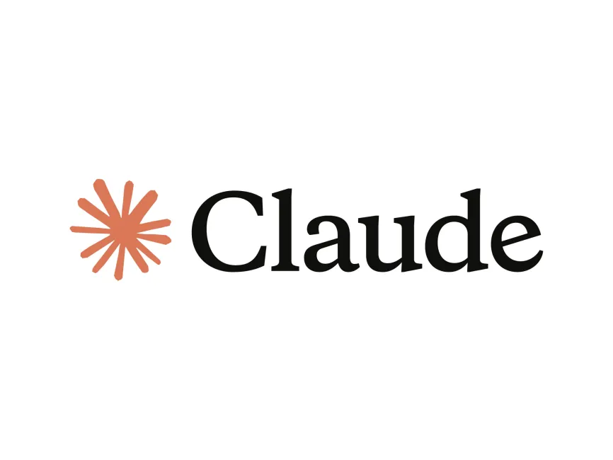
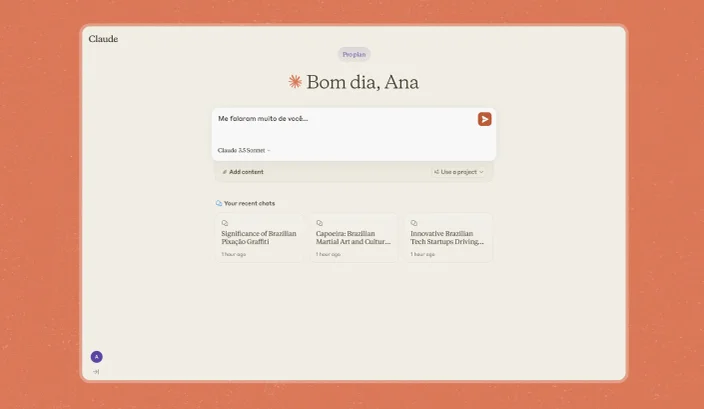

A empresa de inteligência artificial (IA) Anthropic liberou oficialmente o seu assistente para o público brasileiro. A partir de agora, já é possível usar o chatbot Claude no país em suas mais diversas modalidades.
Ele é ativado a partir de prompts de comando de texto, assim como outros chatbots já populares. De acordo com a desenvolvedora, o Claude se especializa em "compreensão da linguagem natural, na solução de problemas complexos e na criação de conteúdo", inclusive para escrita de códigos de programação avançados.
Isso é possível em especial graças a um dos mais recentes recursos da plataforma. Chamado de Artifacts, ele permite a colaboração do usuário com o Claude para edição em tempo real de códigos, documentos, bases de dados e designs.
O atual grande modelo de linguagem (LLM) do Claude é o 3.5 Sonnet, apresentado em junho de 2024 e com capacidades altamente superiores em áreas como cálculos matemáticos, programação, conhecimento geral e argumentação. Ele pode ser usado sem custos no site da Anthropic e no aplicativo do chatbot para iOS, além de ter limites maiores para assinantes dos planos corporativos ou conjuntos.
Fora a liberação do chatbot, agora desenvolvedores brasileiros podem integrar a API da Anthropic em seus próprios aplicativos, sites ou serviços.
Para uso no Brasil, o Claude.ai está disponível tanto em planos gratuitos quanto modalidades pagas. Você pode usar o chatbot de graça no site da Anthropic ou a partir do aplicativo para dispositivos móveis Android e iOS.
Quem deseja acesso antecipado a novos recursos e acesso aos modelos Claude atuais precisa pagar o Plano Pro, que sai por R$ 110 ao mês e é individual.
Já o Plano Team garante acesso a esses recursos e mais chats compartilhados com colegas de equipe — isso por R$ 165 por usuário por mês, com um mínimo de 5 máquinas cadastradas.